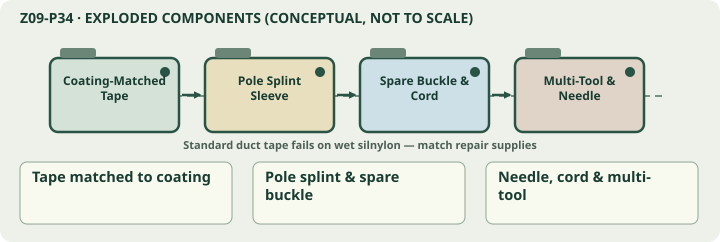

Z09-P34 · Tools and construction · New manuscript
Assemble a route-matched field repair kit before departure
Carry compact, compatible repair supplies matched to your actual shelter, pack, sleep pad, clothing and water gear.
When it applies · Day hikes, overnight backcountry trips and household emergency preparedness packs.
Equipment · Gear-matched repair pouch (fabric/silicone patch tape, pole splint, spare buckle, strong thread/needle, zip ties, cord, multi-tool).

Actions
- Audit every critical gear item you carry—shelter poles, fabric coating (silicone vs polyurethane), inflatable pad, pack hip-belt buckle, boots and stove—and pack the exact compatible patch or spare part.[K07, E20, E02]
- Recognize adhesive limits: standard duct tape peels right off silicone-coated (silnylon) tarps and wet cold fabrics—pack coating-matched tenacious/silicone repair tape where needed.[K07, E20, ED]
- Keep the repair kit dry, compact and inventoried after every trip so used patches, blades or spare O-rings are replaced before the next outing.[K07, T12]
Failure recognition · Packing only a roll of household duct tape on a cold wet trip with a silnylon tarp and inflatable sleeping pad, where the tape slides straight off wet silicone fabric.[K07, E20]
Verify · Confirm every major life-safety gear class has at least one compatible field patch, spare fastener or backup method in the repair pouch.[K07, E02, ED]
Stop or change course · Do not rely on a field repair kit to compensate for already-failing primary shelter, footwear or water-treatment gear prior to departure.[K07, E20, E02]
Evidence and editorial notes
- E02 · NPS · Ten Essentials (current web edition)
- Section: Navigation; insulation; emergency shelter; emergency food and water · Conditions: Outdoor trips; adjust kit to season and route
Support: Carry essential systems including navigation, insulation, light, water and emergency shelter.
Limitations: Carrying items without practice or cold-weather verification does not ensure readiness. · Conflicting evidence: None; baseline kit system architecture.
Editorial note: Supports failure-mode packing and kit verification cards. · Specialist reviewer: Field education and search and rescue
Primary source · checked 2026-11-24 - E20 · NPS · Camping: What to Bring (current web edition)
- Section: Camping: What to Bring > Shelter and Sleep System · Conditions: Overnight camping across three-season and cool conditions
Support: Match tent/tarp, groundsheet, sleeping pad, and sleeping bag ratings to expected night lows and precipitation; test pitching and inspect poles, zippers, and stakes before departure.
Limitations: Manufacturer comfort ratings assume dry insulation, ground pad use, and adequate caloric intake. · Conflicting evidence: None; reinforces pre-trip inspection and dry-sleep separation.
Editorial note: Anchors manufactured shelter selection, groundsheet fit, and gear readiness. · Specialist reviewer: Shelter equipment and field education
Primary source · checked 2026-11-24 - K07 · NPS · Ten Essentials (current web edition)
- Section: Repair Kit and Tools · Conditions: Field equipment repair during backcountry travel
Support: Carry a route-appropriate repair kit (duct/gear tape, multi-tool, cordage, patch supplies) matched to shelter, pack, stove and water gear; verify compatibility before departure.
Limitations: Field patches restore temporary function and do not restore full original storm or load ratings. · Conflicting evidence: None; aligns with E02 and E20.
Editorial note: Grounds field-repair kits, temporary patches and equipment failure limits. · Specialist reviewer: Field equipment safety
Primary source · checked 2026-11-24 - T12 · FEMA / Ready.gov · Build a Kit (current web edition)
- Section: Build a Kit > Basic Disaster Supplies Kit and Maintenance · Conditions: Overnight and multi-day emergency readiness
Support: Assemble water, food, light, NOAA/battery radio, first aid, whistle, local maps, sanitation, medications, and backup power; inspect expiration dates and batteries regularly.
Limitations: Standard 72-hour kits do not cover extended multi-day isolation without replenishment or specialized cold/medical items. · Conflicting evidence: None; links kit readiness to periodic maintenance checks.
Editorial note: Supports equipment readiness, inspection, and overnight-emergency cards. · Specialist reviewer: Emergency management and field readiness
Primary source · checked 2026-11-24
Source lineage · NPS Ten Essentials and Ready.gov kit; new manuscript · Classification · New manuscript.